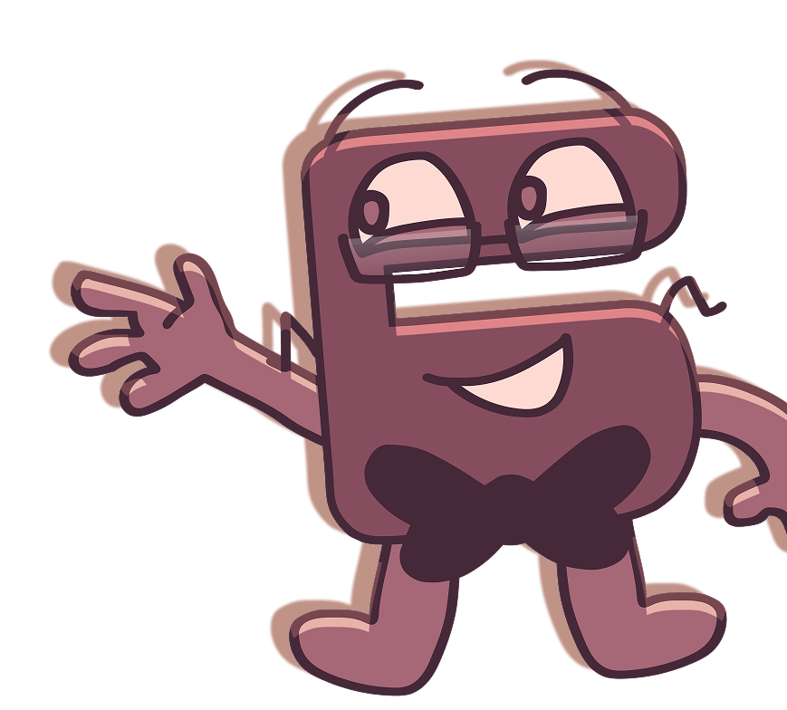
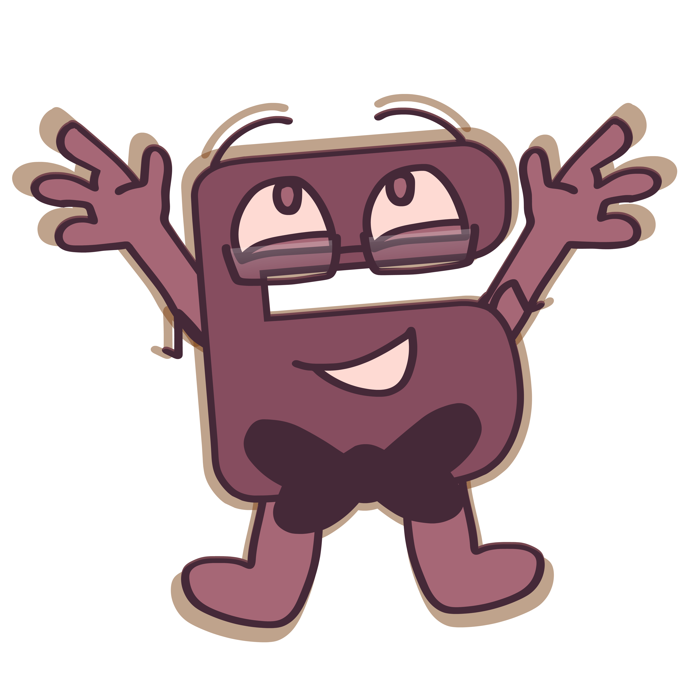
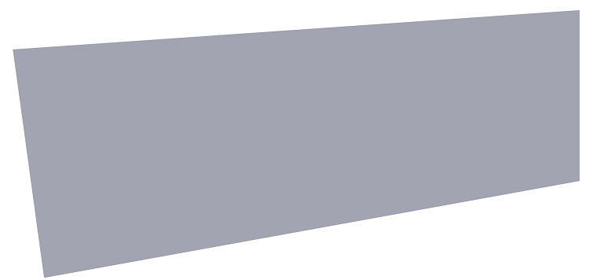
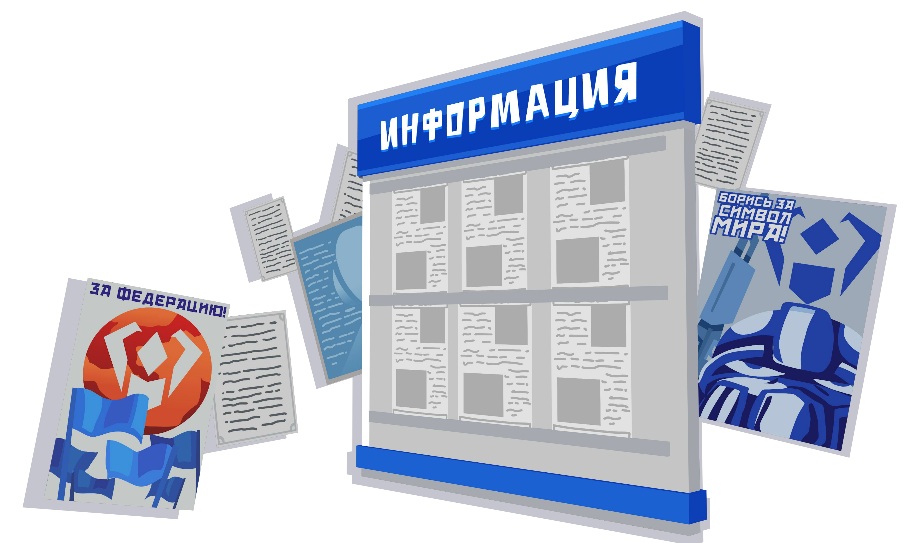
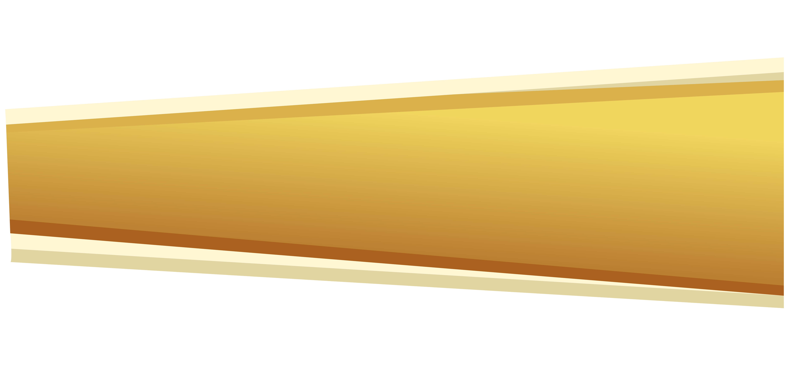
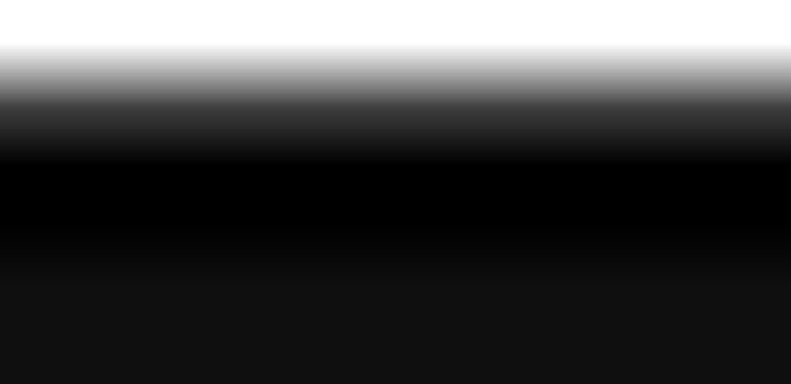

веб проект в жанре обджект шоу, где антропоморфные предметы учавствуют в реалити шоу от живых букв, что обладают сверхсилами. обджектам предстоит сразиться в испытаниях за тонну золота, но пройдет ли все так гладко как задумывалось?

шоу вышло 1 января 2022 года на ютуб канале grifeler. однако изначально он не блистал оригинальностью и был лишь копией более популярных проектов. В 2023 grifeler решается на перезапуск своего проекта. первый эпизод перезапуска вышел в 2024 году. шоу продолжает выходить до сих пор. вышло уже 6 полноценных серий, также 3 серии спин-оффа бзтз - бзтз:mini.


Данный сайт является проектной деятельностью человека под никнеймом Apelsin0106
